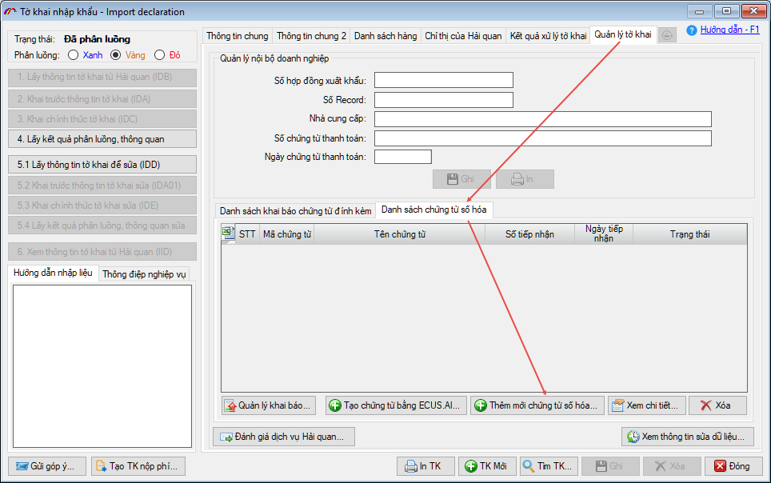
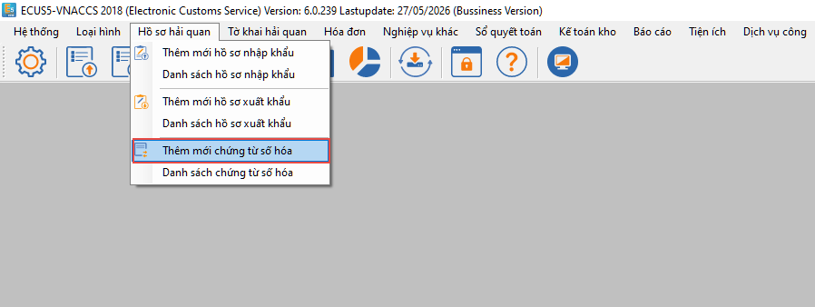
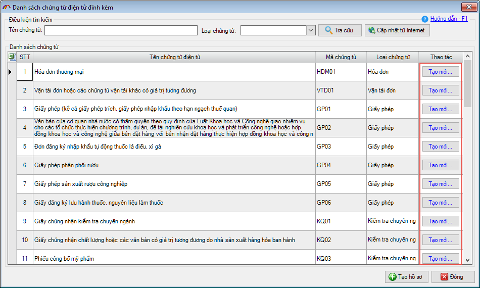
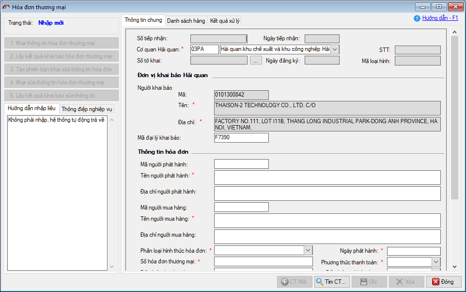
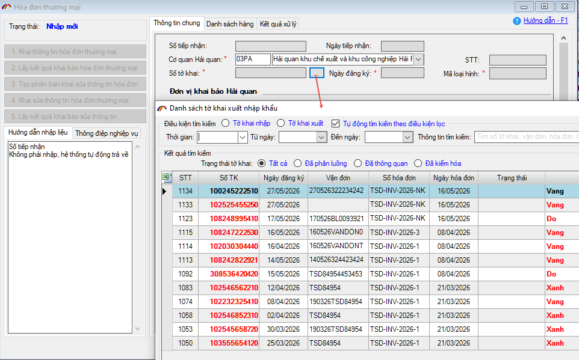
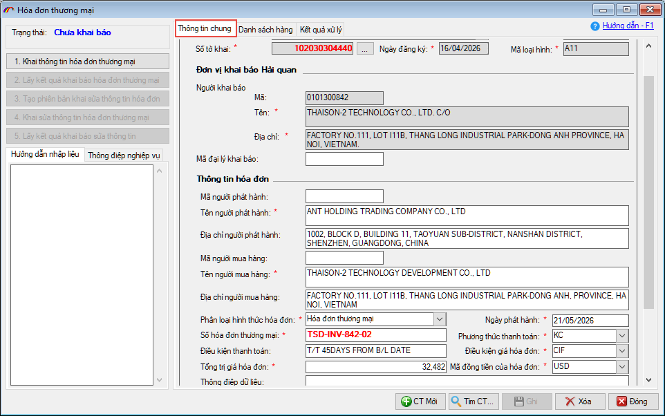
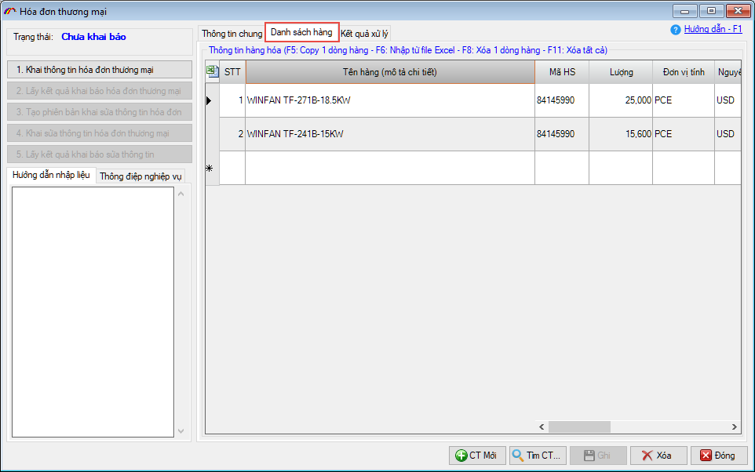
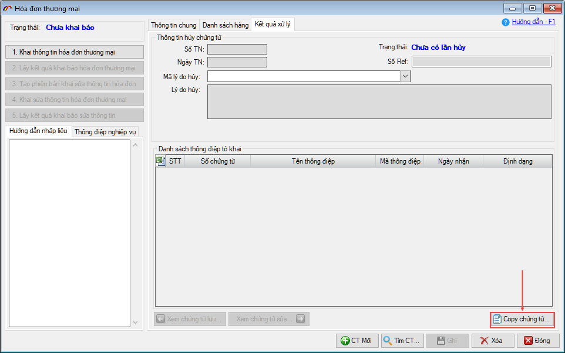

HƯỚNG DẪN SỬ DỤNG
(Chức năng tạo và khai báo chứng từ số hóa thủ công - không sử dụng AI)
Khi người dùng không sử dụng công nghệ AI để phân tích chứng từ tự động, phần mềm vẫn còn cách nhập thủ công truyền thống. Ở cách này, người khai sẽ tự đối chiếu thông tin trên chứng từ gốc và nhập từng chỉ tiêu thông tin vào phần mềm.
Để thực hiện bạn mở tờ khai cần khai báo chứng từ số hóa, vào tab Quản lý tờ khai /
Danh sách chứng từ số hóa và nhấn nút Thêm mới chứng từ số hóa.

Hoặc vào menu Hồ sơ hải quan / Thêm mới chứng từ số hóa.

Màn hình danh sách chứng từ số hóa hiện ra, người khai tìm kiếm và nhấn nút Tạo mới
tại chứng từ cần khai báo.

Ví dụ chọn thêm mới Hóa đơn thương mại, màn hình nhập chứng từ hiện ra như sau:

Người khai tiến hành đối chiếu các thông tin trên chứng từ gốc để nhập liệu cho từng chỉ tiêu thông tin trên chứng từ, với lưu ý các chỉ tiêu có dấu * màu đỏ là bắt buộc phải nhập.
Lưu ý: Phần thông tin tờ khai (Số tờ khai, ngày đăng ký, mã loại hình) nếu bạn tạo chứng từ từ tờ khai, phần mềm sẽ tự động điền vào. Nếu bạn tạo chứng từ từ menu Hồ sơ hải quan / Thêm mới chứng từ số hóa, thì phải chọn thông tin tờ khai cho chứng từ bằng cách nhấn nút có dấu … để chọn tờ khai (chỉ chọn được các tờ khai đã phân luồng).
Lưu ý: Phần thông tin tờ khai (Số tờ khai, ngày đăng ký, mã loại hình) nếu bạn tạo chứng từ từ tờ khai, phần mềm sẽ tự động điền vào. Nếu bạn tạo chứng từ từ menu Hồ sơ hải quan / Thêm mới chứng từ số hóa, thì phải chọn thông tin tờ khai cho chứng từ bằng cách nhấn nút có dấu … để chọn tờ khai (chỉ chọn được các tờ khai đã phân luồng).

Nhập đầy đủ thông tin chung cho chứng từ thể hiện trên chứng từ gốc:

Và nhập thông tin danh sách hàng hoá (lưu ý, bạn nhập thông tin hàng hoá cho chứng từ theo thông tin trên chứng từ gốc, không phải dịch chuyển đổi sang Tiếng Việt đối với tên mô tả hàng hoá.

Bạn có thể Copy chứng từ và sửa thông tin để tạo ra chứng từ mới, giảm bớt thời gian, thao tác nhập dữ liệu bằng cách vào tab Kết quả xử lý của chứng từ cần copy và nhấn nút Copy chứng từ:

 Xem hướng dẫn khai báo chứng từ số hoá
Xem hướng dẫn khai báo chứng từ số hoáBản quyền © thuộc về Công ty TNHH Phát triển công nghệ Thái Sơn